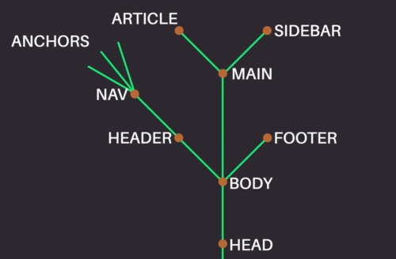

JS
/!\ camelCase : unExempleDeCamelCase /!\
- let : déclaration de variables
- const : déclaration de constante
- number : type pour entiers, décimals, négatifs. /!\ Les virgules sont à éviter pour les calculs (mieux vaut des centimes que des euros) /!\
- boolean : type ayant pour valeur true or false
- string : type pour texte. seul le + correspondant à la concaténation fonctionne. " " : espace
- types de données primitives JS : null, undefined, symbol.
- classes (objet) : fontionne comme une variable mais sa valeur est entre {}. Dans les {} on insère "clé1: valeur1, clé2: valeur2, etc...". Pour accéder à ces valeurs on tape "class.key".
Pour créer une classe on utilise
"class NomClasse {
constructor(arg1, arg2, arg3){
this.arg1 = arg1;
this.arg2 = arg2;
this.arg3 = arg3; }
}"
Pour créer une instance on utilise "new" :
"let nomInstance = new NomClasse("arg1, arg2, arg3) ;
- array (tableaux): fonctionne comme une variable avec sa valeur entre []. Dans les [ on insère "value1, value2, value3, value4, etc..."];. Un array est une liste ordonnée donc chaque valeur a son index, allant de 0 à x.
Pour appeler une valeur on tape nomArray[index]. Déclarable en tant que constante.
On peut placer des variables dans un array.
Les types primitifs (nombres, string, booleens) sont passés par valeurs : Si après définition d'une variable et insertion de cette variable dans un objet/tableau, on choisis de modifier la variable, la valeur ne sera pas mise à jour car elle ne garde pas de relation avec la variable mais avec la valeur.
A l'inverse si on met à jour l'objet ou le tableau, la variable crée le prendra en compte car elle est liée à la référence de cet objet.
Manipuler un tableau : nomArray.length; , nomArray.push("string"); - pour ajouter à la fin, nomArray.unshift("string"); - pour ajouter au début, nomArray.pop(); - pour supprimer le dernier.
Un "set" ou ensemble, est une liste non ordonnée. Les "map" sont comme un array, fonctionnent sur le principe d'une liste ordonnée avec clé-valeur à la différence qu'elles ne se limitent pas aux strings et peuvent être manipulées.
Le JavaScript pour le web
Le DOM corresponds à l'arbre de notre fichier comme suit :

Dans notre DOM, en associant une constante, on va pouvoir rechercher des éléments en fonction de leurs types dans un document:
- Par id avec document.getElementById(""), c'est une méthode précise car il n'existe qu'un élément par id
- Par class avec document.getElementsByClassName("") qui nous sortira une liste des éléments de la classe, on peut ajuster la recherche à l'aide d'index
- Par tag avec document.getElementsByTagName(""). On obitendra une liste également
- Par sélecteur avec document.querySelector("") qui fonctionne de manière plus complexe, par exemple : document.querySelector("#myId p.article > a") ira chercher dans l'élément ayant pour id #myId , les éléments de type <p> qui ont pour classe article,
afin de récupérer le lien <a> qui est un enfant direct (pas des enfants de ses enfants). Il renverra le 1er résultat ou null si aucun élément n'est trouvé
On peut aussi parcourir des enfants et parents d'élements :
- Pour children : element.children nous retourne la liste des enfants de cet élément
- Pour parents : element.parentElement retourne l'élément parent de celui-ci
- Pour ce qui l'entoure : element.nextElementSibling / element.previousElementSibling permet de naviguer vers l'élément suivant / précédent de même niveau
Modifier le contenu d'un élément
Définir une valeur à innerHTML ou textContent remplace directement le contenu actuel de l'élément par celui que vous précisez.
Modifier les classes
La propriété classList permet d'accéder direcement à la liste des classes d'un élément et permet les fonctions suivantes :
- add(<string>, [<string>, ...] ) : ajoute la ou les classes spécifiées
- remove(<string>, [<string>, ...] ) : supprime la ou les classes spécifiées
- contains(<string> ) : vérifie si la classe spécifiée est contenue par cet élément
- replace(<old>, <new> ) : remplace l'ancienne classe par la nouvelle classe
Changer les styles d'un élément
elt.style.color = "#fff" change la couleur du texte de l'élément à blanche.
elt.style.backgroundColor = "#000" change la couleur de fond de l'élément en noir.
elt.style.fontWeight = "bold" met le texte de l'élément en gras.
Modifier les attributs
Voici quelques exemples avec elt faisant référence à un élément de type input :
- elt.setAttribute("type", "password") change le type de l'input en un type password
- elt.setAttribute("name", "my-password") change le nom de l'input en my-password
- elt.getAttribute("name") retourne my-password
On peut utiliser les fonctions getAttribute et removeAttribute.
Créer de nouveaux éléments
document.createElement(<tag>) prend en paramètre le nom de la balise de notre élément et nous renvoie l'élément nouvellement créé.
Exemple : const newElt = document.createElement("div").
Un élément créé avec cette fonction ne fait pas encore partie du document, vous ne le verrez donc pas sur votre page. Pour le voir, il va d'abord falloir l'ajouter en tant qu'enfant à un élément.
Ajouter des enfants